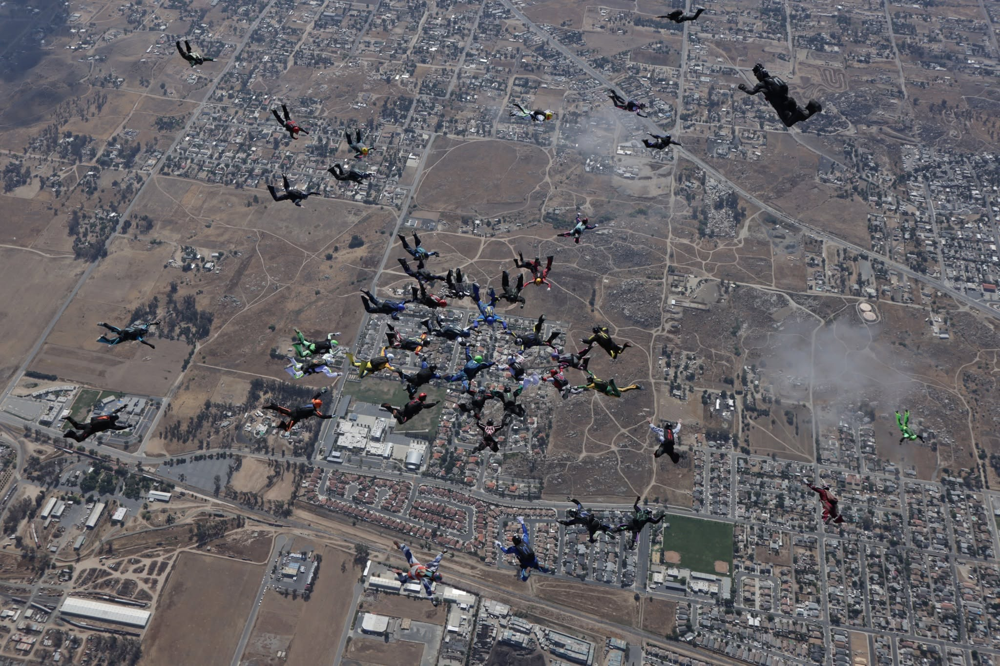
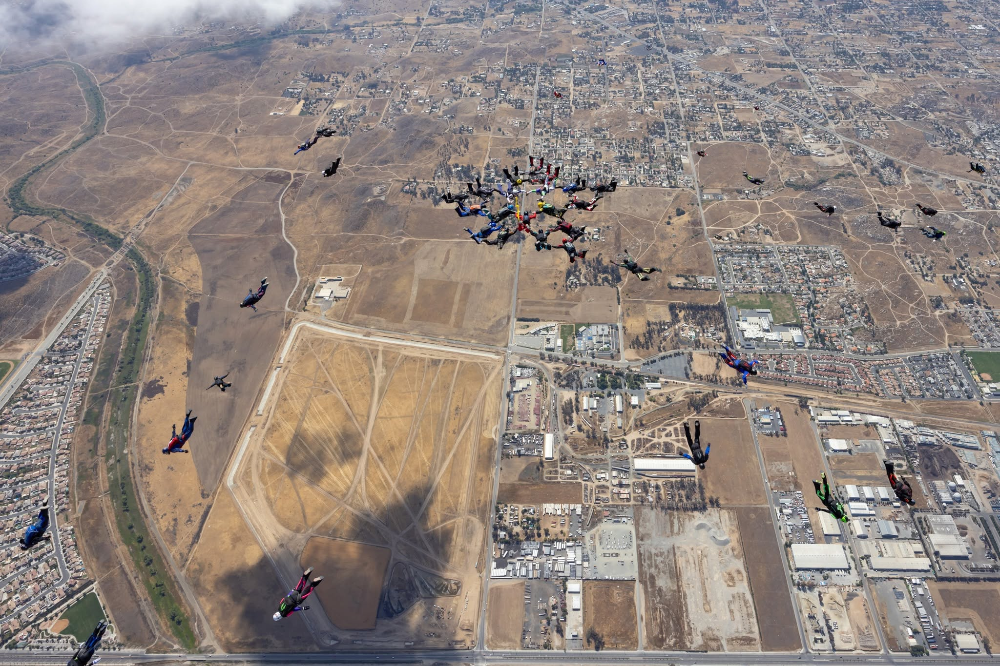
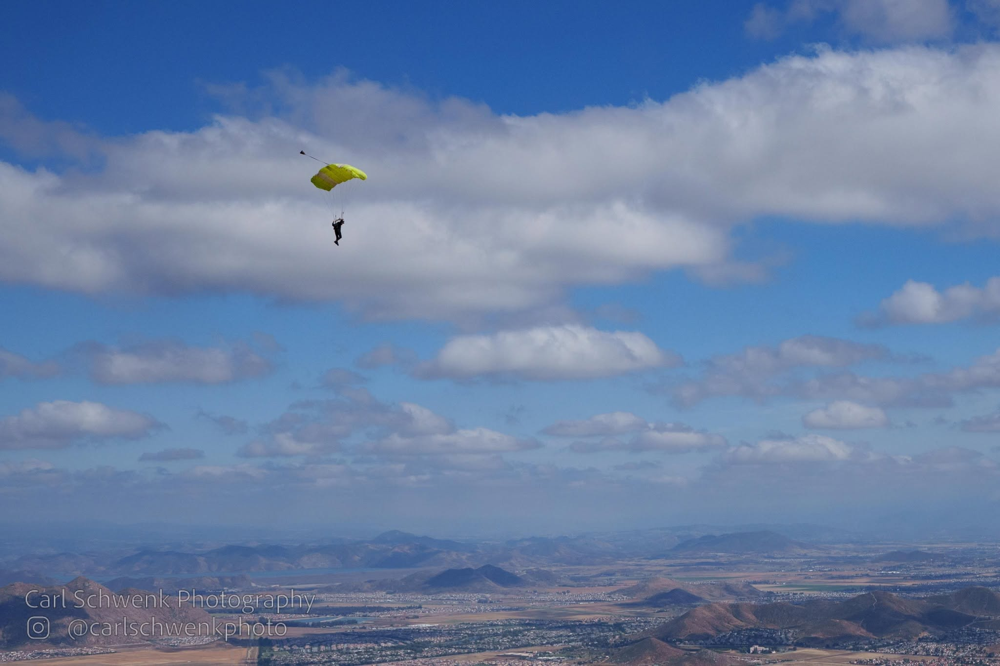
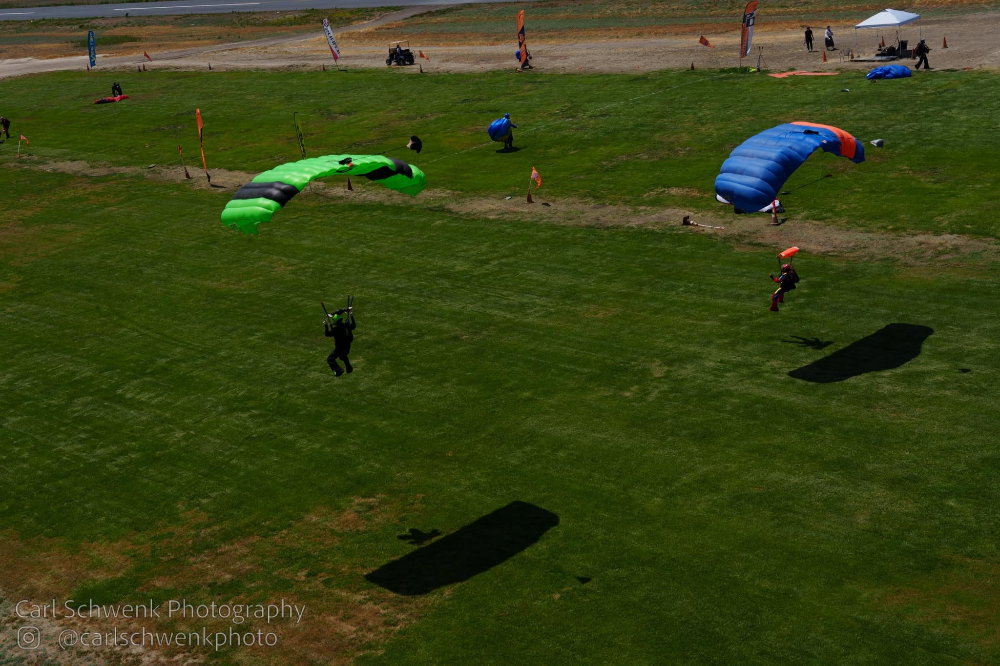
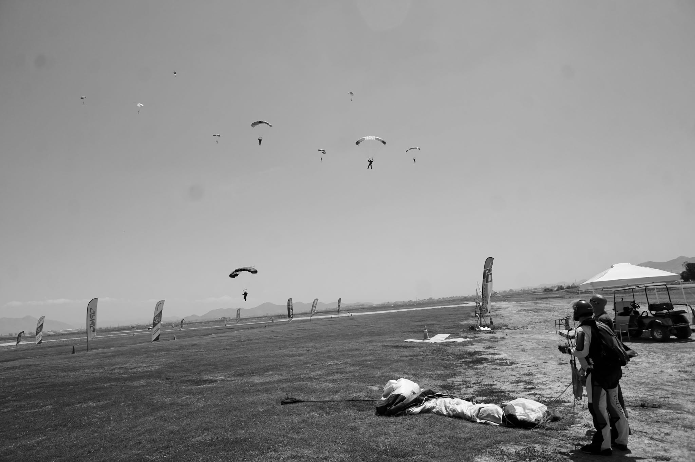

Umar Rafi’s life has been an accidental journey across countries, cultures and professions. Born in Pakistan, he has lived in Iraq, Canada, USA, UAE, Saudi Arabia, Lebanon and Malaysia. His work in entrepreneurship, aviation, technology and finance, and the friendships he has made along the way, have shaped his curiosity about people and what drives them.
His studies and career led him to write books on technology and finance, but the writing closest to his heart is fiction. His novels draw on that learning and lived experience to follow characters across cultures and borders as they navigate love, loyalty and duty, exploring the choices that bring people together and the beliefs that set them apart.
“The greatest gift one can offer another is a moment of laughter and a thought that lingers.”
— Umar Rafi





MEDIA & SPEAKING
Books, ideas and the systems shaping our world.
Available for selected interviews, podcasts, panels and speaking engagements.